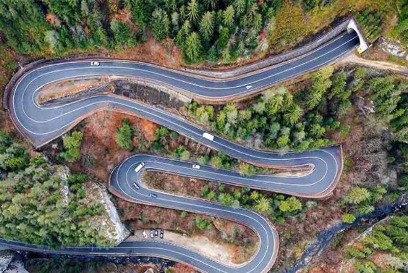
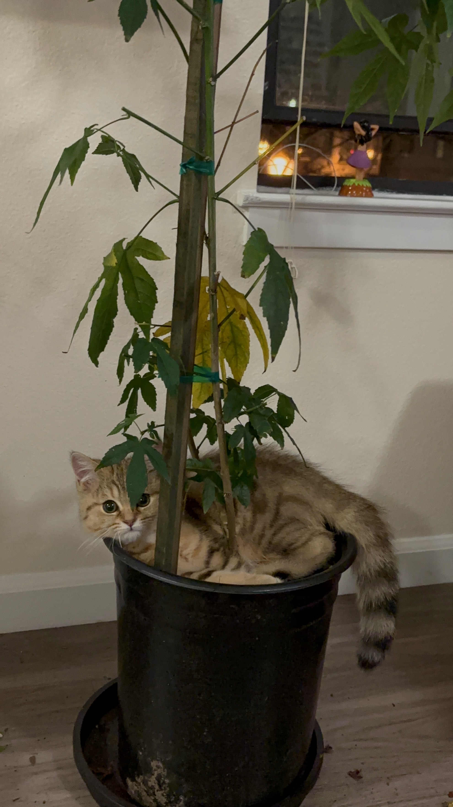
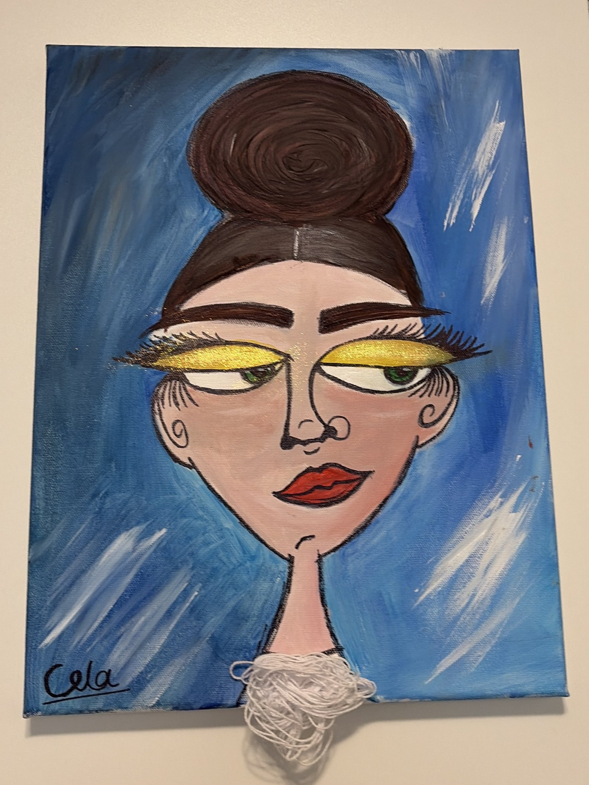
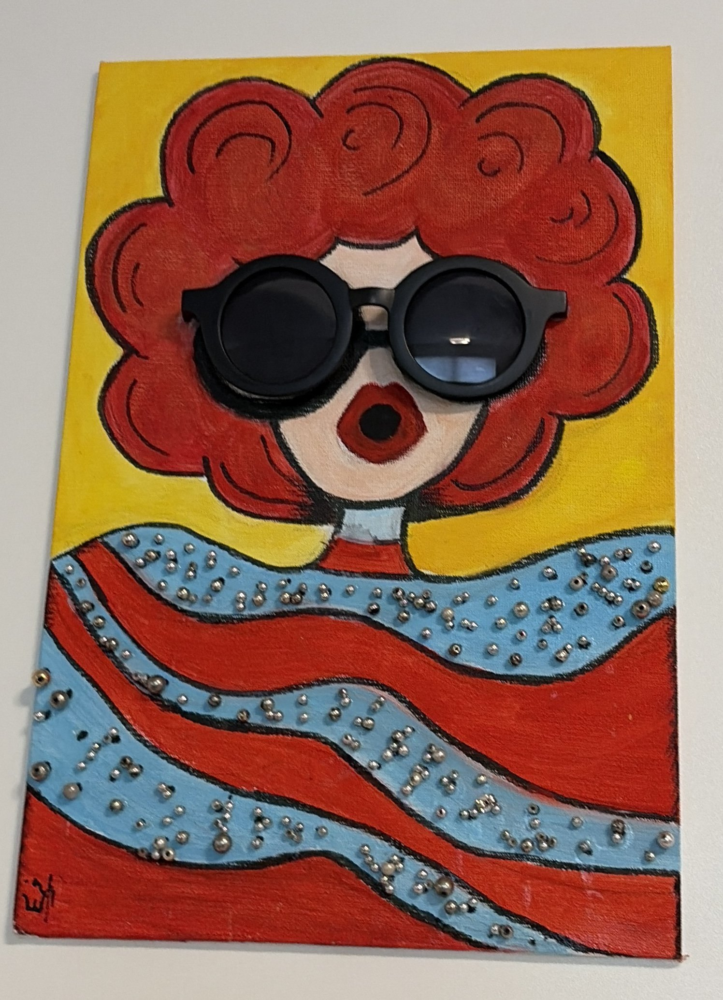
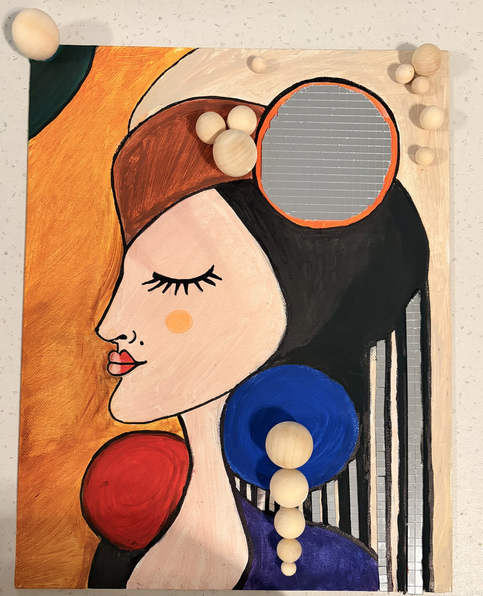

My name is Negar Arabzadeh (نگار). In Persian, Negar means “beloved” — or a piece of art to be cherished.
I am a postdoctoral researcher at UC Berkeley, working with Professor Matei Zaharia. I completed my PhD at the University of Waterloo, where I was advised by Dr. Charles Clarke.
I was born and raised in Iran and moved to Canada in 2017 to pursue my dreams. After eight years of living in Canada, I finally moved to the place I had dreamed of as a child — California.
things I love
-
research
It is truly my passion — I do not think I have ever thought about anything else this much.
-
games
I have a big collection of board games and love playing them, along with video games. Fair warning: I get very competitive.
-
my cats
Chaloos and Cheetoz — meet them below.
-
travel
Travelling is what I look forward to most — perks of a research career and attending conferences!
-
mixed-media painting
Basically any craft combination — one of the few things I do that doesn't involve a monitor or anything digital.


chaloos & cheetoz
I have two cats. Chaloos is named after the most beautiful road I have ever seen in Iran. He is calm, composed, and quietly dignified — how I aspire to be. Cheetoz is pure mayhem, restless and tireless — closer to how I actually am.



mixed-media painting



places I have been
25 countries · and countingTraveling makes me feel alive — my goal is to visit 100 countries by the time I turn 50!